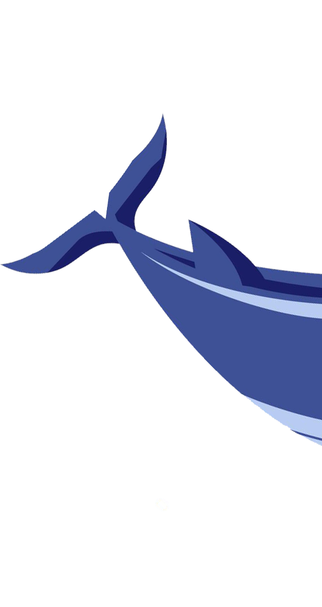

Os oceanos cobrem mais de 70% do planeta. É hora de protegê-los.

Oceanos Vivos é um portal dedicado à conscientização sobre a preservação marinha, explorando os desafios e soluções para proteger nossos oceanos e a biodiversidade marinha.
Os oceanos são essenciais para a vida na Terra, regulando o clima, fornecendo oxigênio e abrigando uma biodiversidade incrível. A preservação marinha é crucial para garantir a saúde dos ecossistemas e a sobrevivência de inúmeras espécies.
As ações humanas têm impacto direto nos ecossistemas marinhos. Atividades como a pesca predatória, o descarte inadequado de lixo e a poluição industrial colocam em risco a vida nos oceanos. No entanto, pequenas atitudes do dia a dia também podem gerar mudanças significativas.
O Projeto OCEANOS VIVOS busca conscientizar sobre a importância dos oceanos e incentivar ações sustentáveis. Aqui você encontra informações e dicas para ajudar na proteção da vida marinha. Pequenas atitudes diárias fazem a diferença. Junte-se a nós por oceanos mais saudáveis!